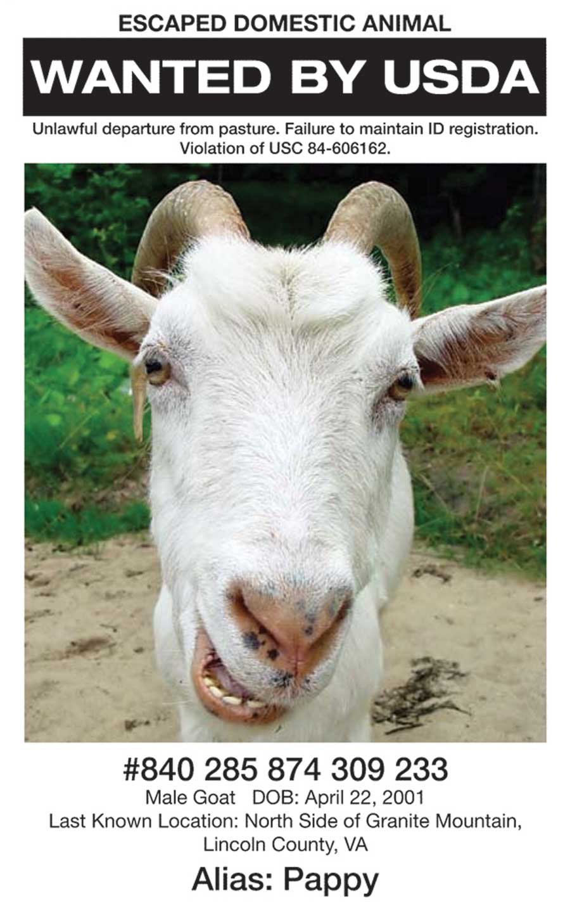

ISTOCKPHOTO/ALEKSANDR LOVANOV
Small farms are endangered by NAIS requirements that penalize small ranches and farms but offer exemptions for large corporations. You can go to
FarmAndRanch Freedom.org for more information, or write your congressperson or President Obama about whether or not NAIS should be implemented.